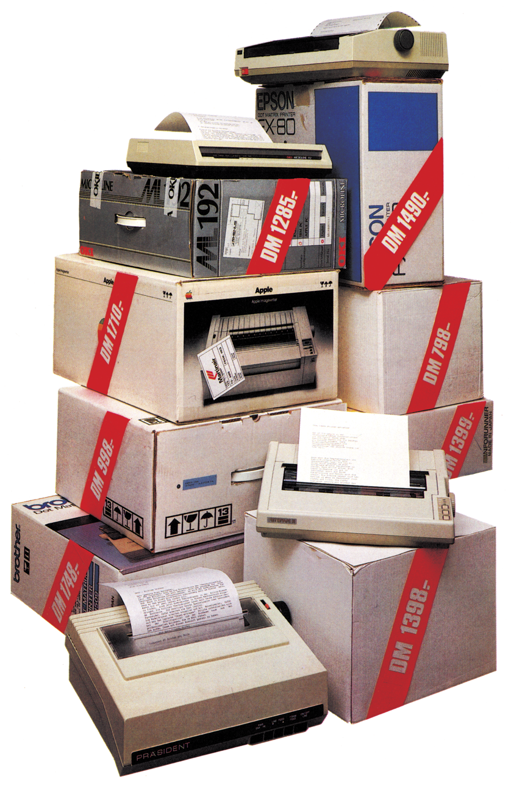
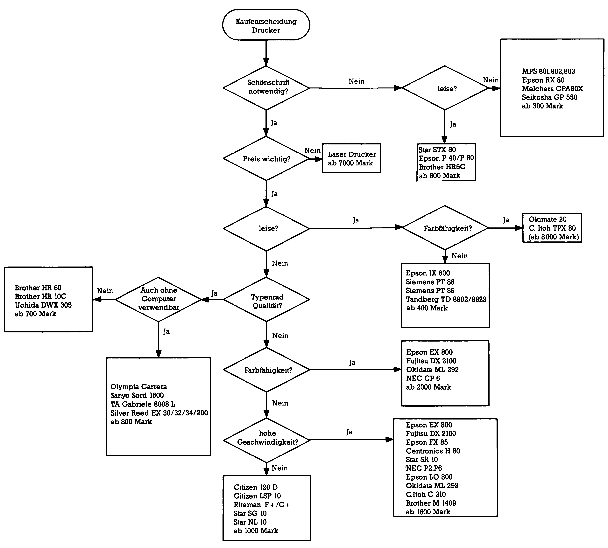
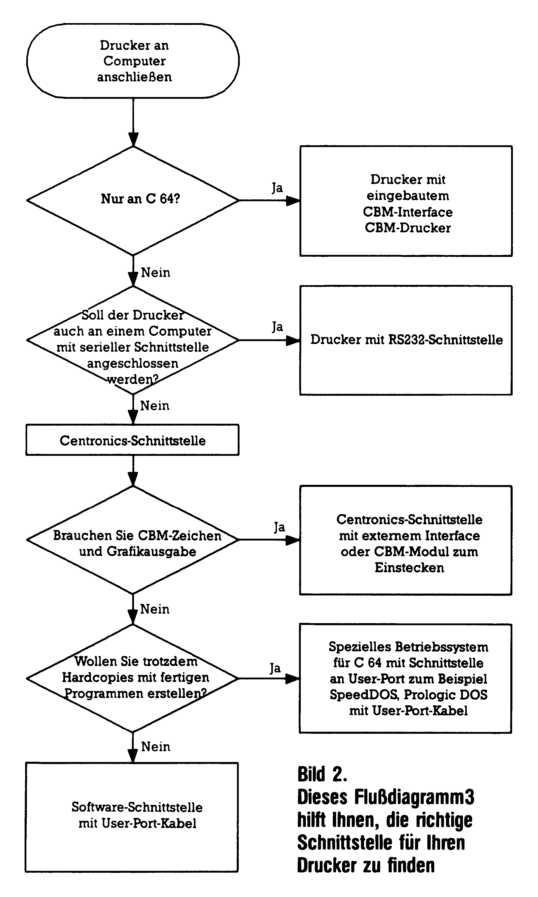

Wo wachsen eigentlich die Drucker?
Keine Angst, Drucker wachsen nicht wie Früchte auf Bäumen, sondern werden in hochtechnisierten Fabriken gebaut. Trotzdem sollte man sich vor dem Kauf einige Gedanken machen, damit man nicht ein falsches »Früchtchen« erhält. Wir helfen Ihnen bei der Auswahl mit Bu handfesten Informationen und sagen Ihnen, wo man einen Drucker am besten kauft.

Einen Drucker kaufen ist nicht einfach, denn groß ist die Auswahl verschiedenster Typen, Druckprinzipien, Preis- und Leistungsklassen. Oft wird ein und derselbe Drucker bei verschiedenen Händlern zu vollkommen unterschiedlichen Preisen angeboten. Wo bleibt da die Vergleichbarkeit? Wie findet man das optimale Angebot? Nun, betrachten wir zunächst die unterschiedlichen Druckprinzipien. Bild 1 hilft dabei, den jeweiligen Druckertyp zu finden. Das Flußdiagramm in Bild 2 zeigt Ihnen dann noch wie sie die entsprechende Schnittstelle für Ihre Belange aussuchen können. Dazu noch einige Informationen zu den einzelnen Drucktechniken.


Moderne Schreibmaschinen sind immer häufiger mit einer Computer-Schnittstelle ausgestattet. Dadurch lassen sie sich direkt oder über ein Interface an den C 64 anschließen. Am besten ist es, wenn die Schreibmaschine nicht mit einer ganz speziellen Schnittstelle, sondern entweder mit der Centronics- oder einer RS 232-Schnittstelle ausgestattet ist. Für diese beiden Normen sind die meisten Interfaces zu relativ günstigen Preisen erhältlich. Wer später mit einem Textprogramm arbeiten möchte, sollte sich für die Centronics-Schnittstelle entscheiden, denn fast alle Programme können diese Norm bedienen. Da die meisten Schreibmaschinen mit Computer-Anschluß mittlerweile mit einem Typenrad arbeiten und ein Carbon-Farbband verwenden, zeichnen sie sich durch ein exzellentes Schriftbild aus. Einzig bei den preiswerteren Modellen muß man manchmal Abstriche an einem harmonischen Schriftbild machen. Hauptnachteil der Schreibmaschinen ist wohl ihre langsame Druckgeschwindigkeit, beziehungsweise das Fehlen einer Grafikfähigkeit. Die meisten Schreibmaschinen sind sehr langsam und brauchen bei längeren Texten nicht unerhebliche Zeiten. Wenn sich dann noch ein Fehler im Text befindet, wird die Warterei auf die Schreibmaschine zur Qual, zumal diese Drucker nicht gerade leise sind. An den Ausdruck einer Bildschirmgrafik in Form einer Hardcopy ist mit einer Schreibmaschine nicht zu denken. Durch die Festlegung auf die Zeichen des Typenrades ist hochauflösende Grafik unmöglich auf das Papier zu bringen. Obwohl es mittlerweise für die meisten Schreibmaschinen eine recht umfangreiche Auswahl an Typenrädern mit verschiedenen Schriften zum Auswechseln gibt, ist man dennoch nicht in der Lage, ein korrektes Listing, in dem Commodore-spezifische Zeichen verwendet wurden, auszudrucken. Für diese Zeichen werden dann entweder falsche oder überhaupt keine Zeichen gedruckt.
Typenraddrucker
Für Typenraddrucker gilt im wesentlichen das gleiche, wie für die Schreibmaschinen. Einzige, wesentliche Unterschiede sind das noch etwas verbesserte Druckbild und die meistens gesteigerte Schreibgeschwindigkeit. Wer seinen Computer allerdings als professionelles Schreibsystem ausbauen möchte, sollte dennoch über einen Typenraddrucker nachdenken, denn für diese Geräte gibt es interessante Zusatzeinrichtungen wie beispielsweise einen automatischen Einzelblatteinzug.
Matrixdrucker
Im Gegensatz zu den vorgefertigten Zeichen der Typenraddrucker besitzen die Matrixdrucker einen Druckkopf, der die zu druckenden Zeichen jedesmal neu zusammensetzt. Im Heim- aber auch im Bürobereich sind Matrixdrucker am weitesten verbreitet. Sie werden dort vom einfachen Protokolldrucker bis zum teuren Korrespondenzdrucker eingesetzt. So vielfältig, wie die Einsatzmöglichkeiten der Matrixdrucker sind, sind auch ihre Funktionen. Lange Jahre war das größte Manko der Matrixdrucker die fehlende Schönschrift. Bauartbedingt ist es auch gar nicht so einfach, mit einer begrenzten Anzahl von Drucknadeln ein ansprechendes Schriftbild herzustellen. Man kann die Druckqualität nur dadurch erhöhen, daß man entweder die Anzahl der Drucknadeln erhöht, oder jeden Punkt, um wenige Mikrometer verschoben, nochmals druckt. Seit etwas über einem Jahr setzen sich im DBürobereich Matrixdrucker mit 18 oder 24 Drucknadeln (statt normalerweise neun Nadeln) durch. Im Heimbereich dominieren die NLQ-Drucker (Near Letter Quality=Schönschrift), die bei deutlich geringerem Anschaffungspreis ein durchaus ansprechendes Schriftbild produzieren können. Gleichzeitig bleiben aber auch die übrigen Vorteile der Matrixdrucker erhalten. So sind heute fast alle Drucker, die nach dem Matrixprinzip arbeiten, grafikfähig, das heißt, sie sind in der Lage, ankommende Daten nicht nur als Buchstaben, sondern auch als Bitmuster zu interpretieren. Damit sind dann so reizvolle Anwendungen wie eine Bildschirm-Hardcopy eines hochauflösenden Bildes oder die Darstellung von beliebigen Zeichen möglich. Wie kaum ein anderes Druckprinzip verbinden Matrixdrucker Druckgeschwindigkeit, gutes Schriftbild und extreme Flexibilität für verschiedenste Anwendungen. In letzter Zeit ist zu den üblichen Funktionen der Matrixdrucker noch die Fähigkeit, farbig zu drucken, hinzugekommen. Dabei gehen die Hersteller zwei verschiedene Wege, den Drucker farbfähig zu machen. Zum einen werden Drucker angeboten, bei denen die Farbtechnik bereits eingebaut ist, zum anderen gibt es Drucker, bei denen sich die Farbtechnik nachträglich einbauen läßt. Im Gegensatz zu reinen Farbdruckern gehen bei diesen Modellen keine der Fähigkeiten des Textdruckes ohne Farbe verloren. Leider muß man für eine solche Farbfähigkeit mindestens 300 Mark zusätzlich ausgeben.
Tintenstrahldrucker
Betrachtet man das Druck-Prinzip, so unterscheiden sich Tintenstrahldrucker nur sehr wenig von Matrixdruckern. Auch bei den Tintenstrahldruckern werden die Buchstaben aus einzelnen Punkten zusammengesetzt. Der wesentliche Unterschied liegt in der Drucktechnik, denn dort, wo beim Matrixdrucker Nadeln für den Druck der Buchstaben sorgen, besitzen Tintenstrahldrucker feine Düsen, durch die winzige Farbtropfen auf das Papier geschleudert werden. Mit dieser Technik läßt sich eine exzellente Schriftqualität erzielen — und das bei einem extrem niedrigen Geräuschpegel. Neueste Entwicklungen deuten darauf hin, daß dieses Druckprinzip sich in absehbarer Zukunft durchsetzen könnte. Indikatoren dafür sind der gesunkene Preis und die mittlerweile ausgereifte Technik, die zum Beispiel das früher übliche Austrocknen der Tintenstrahldüsen vermeidet. Wer möchte, kann heute sogar farbig druckende Tintenstrahldrucker erhalten.
Thermodrucker
Auch Thermodrucker setzen die Buchstaben aus einzelnen Punkten zusammen. Die Farbe wird dabei durch Erhitzung eines speziellen wärmeempfindlichen Papiers oder durch Abschmelzung von einem speziellen Farbband auf das Papier gebracht. Leider sind die Unterhaltskosten für derartige Drucker nicht gerade niedrig, denn sowohl Thermopapier als auch Thermofarbband sind relativ teuer. Obwohl Thermodrucker sehr leise und damit durchaus für den Heimbereich geeignet sind, so ist doch deren Druckgeschwindigkeit, die sich kaum über 80 Zeichen pro Sekunde steigern läßt, etwas gering. Auch bei Thermodruckern ist Farbe groß in Mode. Hier bieten sich Anwendungsbereiche, die andere Drucker nur schwer, oder gar nicht erfüllen können. Farbige Hardcopies, mit einem Thermodrucker erstellt, bestechen durch sehr gute Farbsättigung und leuchtende Farben. Ganz billig ist so ein Bild allerdings nicht, zwischen zwei und fünf Mark muß man dafür schon einkalkulieren.
Welcher Drucker ist der richtige?
Diese Frage läßt sich natürlich nicht mit einem Satz beantworten. Zu verschieden sind die Anforderungen und Wünsche, die jeder an »seinen« Drucker stellt. Manch einer möchte sehr viel Listings ausdrucken, braucht deshalb den Commodore-Zeichensatz und legt wenig Wert auf eine schöne Schrift. Andere wiederum interessieren sich nur für die Textverarbeitung und wollen ein möglichst schönes Schriftbild haben. Den idealen Drucker für beide gibt es eigentlich noch nicht, obwohl mancher Matrixdrucker diesem Ideal schon recht nahe kommt. Dabei spielt aber letztendlich der Preis die entscheidende Rolle, denn ein guter Drucker ist höchstens preiswert, aber niemals billig. Wer heute Grafikfähigkeit, NLQ-Schrift, ausreichende Druckgeschwindigkeit und eine gute mechanische Stabilität haben möchte, wird einen entsprechenden Drucker selten unter 1000 Mark erhalten. Aber damit sind wir gleich beim nächsten Thema unserer Kaufberatung — nämlich der Frage, wo kaufe ich eigentlich?
Der billige Jakob
Wer gibt schon gerne mehr als unbedingt notwendig für eine Anschaffung aus? Sicherlich wird sich jeder, der an den Kauf eines Druckers denkt, über die Marktsituation informieren. Er wird sich Preisangebote von verschiedenen Anbietern einholen, wird einige der ortsansässigen Geschäfte besuchen und möglicherweise sogar das Gebraucht-Angebot im Kleinanzeigentell vieler Zeitschriften durchforsten. Diese Methode könnte man auch treffender als »Spiel mit dem Risiko« bezeichnen, denn nicht jedes Angebot, dasaufdenersten Blick preisgünstig erscheint, ist, es letztendlich auch. Viel Ärger und möglicherweise auch nicht unerhebliche Kosten kann man sich einhandeln, wenn man ohne die Leistungsfähigkeit einer Firma geprüft zu haben, blind auf die »unglaublich günstigen« Preise vertraut. Der Haken bei allem ist nämlich weniger das Gerät an sich, denn diese werden in der Regel für Europa einheitlich produziert, sondern der Service nach dem Kauf. Leider sind Drucker keine rein elektronischen Geräte, wie beispielsweise ein Computer, sondern besitzen einen nicht unerheblichen Anteil mechanischer Teile, die gepflegt und gewartet werden wollen. Nicht umsonst geben Hersteller in den technischen Daten immer die Lebensdauer eines Druckkopfes und der Druckmechanik an, denn diese Baugruppen sind Ver brauchsteile, wie bei einem Auto die Kupplung oder die Reifen, nur mit dem Unterschied, daß wesentlich größere Zeiträume (MTBF= Mean Time between Failior) verstreichen, bis sich so ein Teil verabschiedet. Leider handelt es sich dabei um statistische Werte, das heißt, es ist durchaus möglich, daß ein Druckkopf nach neun Monaten defekt wird. Dann aber ist man froh, wenn man eine zuverlässige Reparaturwerkstatt hat.
Doch wie soll man sich als Käufer informieren? Eine schwierige Frage, die nicht einfach zu lösen ist, denn den meisten Anzeigen und Angeboten ist natürlich nicht anzusehen, ob nun ein »grauer Importeur« dahinter steckt oder nicht. Hier können die Testberichte in der 64er aberauchin»Happy Computer« oder »Computer persönlich« eine echte Hilfe sein. Nicht nur, daß Sie dort von neutraler Stelle ein Leistungsbild des Druckers erhalten, in der 64'er finden Sie beispielsweise unter jedem Testbericht eine Informationsadresse Dort können Sie in der Regel kostenlos Informationen anfordern.
(aw)